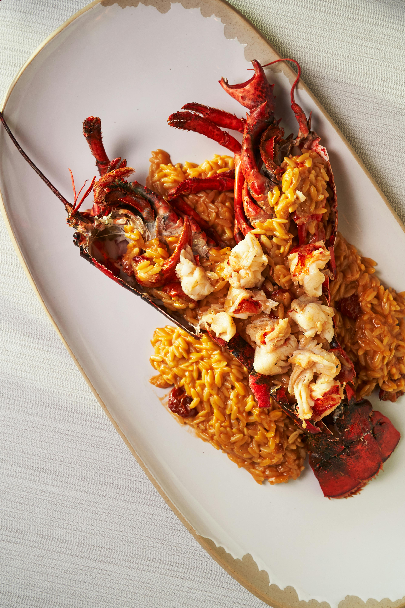

Classic Milanese braised veal shanks with creamy saffron risotto (Osso Buco alla Milanese)

Prep Time
45 mins
Cook Time
2.5 hours
Total Time
3.25 hours
Serves
6 people
Ingredients
For the Osso Buco:
6 veal shanks (about 3 inches thick)
1 cup all-purpose flour for dredging
4 tablespoons olive oil
2 medium onions, finely diced
2 carrots, finely diced
2 celery stalks, finely diced
4 cloves garlic, minced
2 cups dry white wine
2 cups veal or chicken stock
2 bay leaves
2 sprigs fresh thyme
2 sprigs fresh rosemary
Salt and freshly ground black pepper
For the Gremolata:
Zest of 2 lemons
4 cloves garlic, finely minced
½ cup fresh parsley, finely chopped
For the Saffron Risotto:
2 cups Arborio rice
1 large pinch saffron threads
6 cups hot chicken stock
1 medium onion, finely diced
½ cup dry white wine
4 tablespoons butter
½ cup freshly grated Parmigiano-Reggiano
Salt to taste
Instructions
For the Osso Buco:
Season veal shanks generously with salt and pepper, then dredge in flour, shaking off excess.
Heat olive oil in a large Dutch oven over medium-high heat. Brown veal shanks on all sides until golden brown (about 8 minutes per side). Remove and set aside.
In the same pot, reduce heat to medium and add onions, carrots, and celery. Cook until softened (about 8 minutes).
Add garlic and cook for another minute until fragrant.
Pour in white wine, scraping up any brown bits from the bottom of the pot. Simmer until reduced by half.
Return veal shanks to the pot. Add stock, bay leaves, thyme, and rosemary.
Bring to a simmer, cover, and cook on low heat for 2 hours or until meat is very tender.
For the Saffron Risotto:
Steep saffron in 1/2 cup hot chicken stock for 10 minutes.
In a separate pot, heat 2 tablespoons butter and cook onion until softened.
Add rice and toast for 2-3 minutes until lightly toasted.
Add wine and stir until absorbed.
Add hot stock one ladle at a time, stirring constantly and waiting for each addition to be absorbed before adding more.
After about 18 minutes, add saffron mixture.
Cook until rice is al dente (about 20-22 minutes total).
Remove from heat, stir in remaining butter and Parmigiano-Reggiano.
For the Gremolata and Service:
Mix lemon zest, garlic, and parsley together.
Serve osso buco over saffron risotto, topped with gremolata.
Tips:
Ask your butcher to tie the veal shanks around the middle with kitchen twine to help them keep their shape while cooking.
The marrow inside the bones is considered a delicacy - provide small spoons for guests to enjoy it.
For the best risotto, use only high-quality Carnaroli or Arborio rice and real Parmigiano-Reggiano.
The osso buco can be made a day ahead and reheated gently before serving.